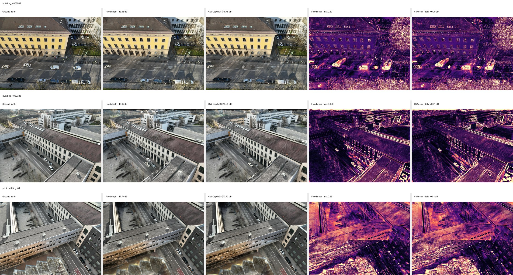

独立验证建筑 4906981
+0.3994 dB95% CI [0.3048, 0.4953]SSIM+0.00936LPIPS改善+0.00511
在固定24视角条件下，比较深度监督方式对建筑重建的影响。保留多建筑验证、模块消融和局部校准诊断，说明方法的收益与场景差异。
仅依靠颜色监督，弱纹理屋顶和立面的结构容易不稳定。单目深度提供稠密覆盖，COLMAP提供稀疏几何观测；两类监督分别计算，再共同约束3DGS训练。
最终方法保留成熟的3DGS渲染路径，只在训练阶段增加几何约束。
Depth Anything V2补足弱纹理区域，并通过COLMAP观测校准尺度与偏移。
过滤高重投影误差与短轨迹点，再以Huber损失控制异常梯度。
在相邻视角间约束深度关系，减少同一建筑结构的局部形变。
根据空间留出与校正幅度诊断，选择是否采用局部校准。现有实验分别运行两条训练路径。
先在调参建筑上逐项比较监督模块，再固定配置进行多建筑、多随机种子验证。出现建筑间差异后，单独检查局部校准的影响。
RGB-only只使用外观监督，用于观察增加深度先验的整体收益。固定深度基线加入普通单目深度监督，用于检验置信度与几何模块是否带来进一步改善。每栋建筑固定24个训练视角，测试视角单独保留。
在4959323上，以稠密单目深度为共同基础，比较鲁棒稀疏几何、局部尺度与偏移校准、动态IRLS和跨视角一致性。后续增强组共享稀疏Huber项，因此配置名称和开关必须一起阅读。
三栋建筑分别运行RGB-only、固定深度和选定配置，每种方法使用seed 0、1、2，共27次正式训练。各组共享相机、训练测试划分和7000次迭代。4959323参与方法选型，4906981与pilot用于另外两栋建筑的验证。
正式结果报告三个随机种子的均值与样本标准差，并按同种子、同测试视角执行10,000次配对Bootstrap。后续局部校准开关实验使用seed 0，单独展示，不与27次正式训练合并统计。
以下结果来自方法选型建筑4959323的单种子实验。所有组使用相同24视角划分和7000次迭代。
| 配置 | 稠密深度 | 稀疏Huber | 局部校准 | 动态IRLS | 跨视角 | PSNR ↑ | SSIM ↑ | LPIPS ↓ |
|---|---|---|---|---|---|---|---|---|
| 固定深度 | 开 | 关 | 关 | 关 | 关 | 21.2390 | 0.66264 | 0.33881 |
| 加入鲁棒稀疏Huber | 开 | 开 | 关 | 关 | 关 | 21.1752 | 0.66163 | 0.33819 |
| 鲁棒＋局部校准 | 开 | 开 | 开 | 关 | 关 | 21.2046 | 0.66295 | 0.33908 |
| 鲁棒＋动态IRLS | 开 | 开 | 关 | 开 | 关 | 21.0916 | 0.66079 | 0.33949 |
| 鲁棒＋跨视角 | 开 | 开 | 关 | 关 | 开 | 21.1890 | 0.66502 | 0.33570 |
| 鲁棒＋局部＋动态＋跨视角 | 开 | 开 | 开 | 开 | 开 | 21.2295 | 0.66456 | 0.33742 |
| 鲁棒＋局部＋跨视角（选定配置） | 开 | 开 | 开 | 关 | 开 | 21.2365 | 0.66574 | 0.33614 |
在鲁棒稀疏监督上加入跨视角项后，SSIM由0.66163提高至0.66502，LPIPS由0.33819降至0.33570。这个组合的LPIPS是本组消融中最低的。
单独加入动态IRLS后，PSNR降至21.0916 dB，SSIM和LPIPS也未优于鲁棒稀疏组。局部校准与跨视角组合关闭IRLS后，PSNR为21.2365 dB、SSIM为0.66574，因此后续配置关闭动态IRLS。
选定组合取得本表最高SSIM，但PSNR仍略低于固定深度的21.2390 dB，LPIPS也未优于仅增加跨视角的组合。模块叠加并不保证所有指标同时提升。
后续实验只关闭局部8×8校准，保留鲁棒稀疏Huber与跨视角项。三栋建筑均使用固定划分、seed 0和7000次迭代。
| 建筑 | 局部校准 | PSNR ↑ | SSIM ↑ | LPIPS ↓ | COLMAP AbsRel ↓ |
|---|---|---|---|---|---|
| 4906981 | 开启 | 19.8985 | 0.63819 | 0.36855 | 0.02470 |
| 4906981 | 关闭 | 19.7766 | 0.63486 | 0.37002 | 0.03014 |
| 4959323 | 开启 | 21.3032 | 0.66576 | 0.33643 | 0.02853 |
| 4959323 | 关闭 | 21.2325 | 0.66483 | 0.33576 | 0.02643 |
| pilot | 开启 | 19.3905 | 0.73764 | 0.23914 | 0.26312 |
| pilot | 关闭 | 19.8019 | 0.74273 | 0.23690 | 0.02896 |
pilot关闭局部校准后，PSNR提高0.4114 dB，COLMAP描述性AbsRel由0.26312降至0.02896；4906981关闭后，PSNR和几何一致性均下降。因此，统一关闭局部校准同样会损失有效约束。
诊断按完整空间网格留出验证，避免同一网格的观测同时落入训练和验证区域。当留出AbsRel相对改善不低于2%，且校正幅度P95不超过8%时启用局部校准。三栋建筑的P95依次为3.53%、6.53%和8.92%，因此pilot采用鲁棒Huber与跨视角路径。
这套规则依据三栋建筑的seed 0实验确定。更多建筑及多随机种子的门控验证仍待补充。COLMAP点参与了训练，AbsRel只表示与这些观测的描述性一致性。
三种方法、三个随机种子、固定划分，共27次正式训练。下列数值为最终方法相对RGB-only的PSNR提升。
独立验证建筑 4906981
+0.3994 dB95% CI [0.3048, 0.4953]调参建筑 4959323
+0.1552 dB95% CI [0.0544, 0.2543]独立验证 pilot
+0.2066 dB95% CI [0.0206, 0.3853]最终方法在三栋建筑上的PSNR均优于RGB-only。相对固定深度强基线，增益仍受场景和指标影响。
定性展示采用每栋建筑的中位测试视角，保持选择规则一致。

数据、脚本、统计和限制条件均保留在复现材料中。
样本单位为同一测试视角和同一随机种子。
所有方法共享相机、划分、7000次迭代和随机种子。
COLMAP点参与训练，只作为描述性一致性，不作为独立真值。
RTX 5090上，最终方法的训练、渲染及指标计算共474.5±17.2秒，相对固定深度增加约11.8%，未包含COLMAP和单目深度预处理。另在RTX PRO 6000上测得纯CUDA渲染约86–99 FPS，排除PNG写盘；该数值不是本网页的运行帧率。
扩展建筑数量，采用留一建筑验证门控阈值，并完成独立ULS LiDAR配准评价与12/18视角实验。
阅读完整技术报告